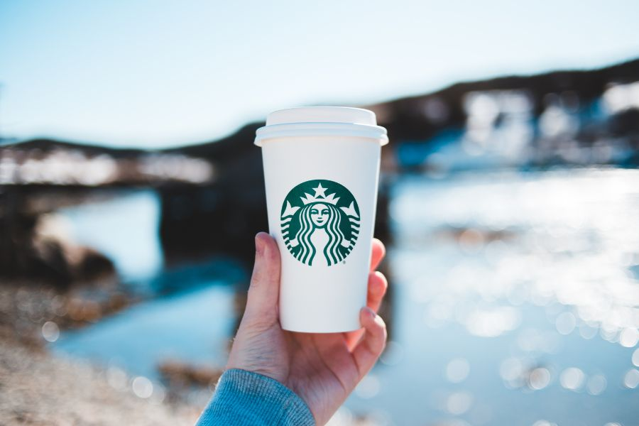
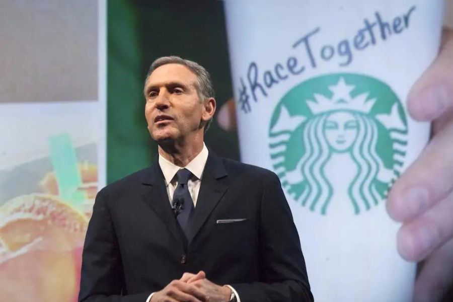
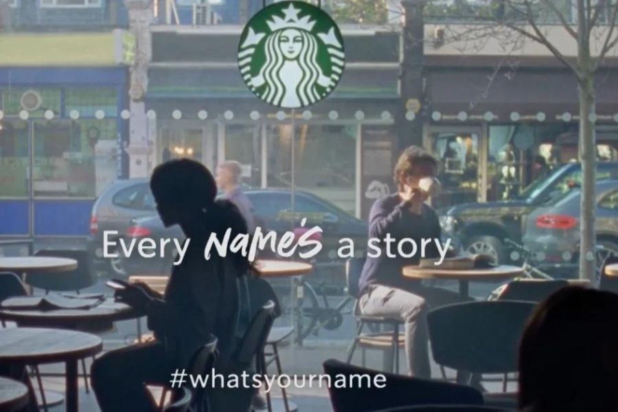

Danh mục nội dung
Starbucks đã trở thành biểu tượng của ngành công nghiệp cà phê trên toàn thế giới. Thành công của thương hiệu không chỉ đến từ chất lượng sản phẩm mà còn nhờ những chiến dịch Marketing sáng tạo. Tuy nhiên, Starbucks cũng từng gặp phải nhiều thất bại đáng nhớ, mang đến những bài học giá trị cho các doanh nghiệp.
1. Chiến dịch Collapse into cool (2002)

Năm 2002, Starbucks quảng bá dòng sản phẩm Tazo Citrus bằng một poster gồm hai ly nước và hình ảnh một con chuồn chuồn bay về phía trước.
Tuy nhiên, chiến dịch được triển khai chưa đầy một năm sau sự kiện khủng bố ngày 11/9 tại Mỹ. Nhiều người cho rằng hình ảnh hai ly nước giống hai tòa tháp đôi và con chuồn chuồn giống chiếc máy bay lao vào tòa nhà.
Đặc biệt, việc sử dụng từ "Collapse" (sụp đổ) càng khiến khách hàng liên tưởng đến sự kiện đau thương.
Sau làn sóng chỉ trích mạnh mẽ, Starbucks buộc phải thu hồi toàn bộ poster.
Bài học:
- Cẩn trọng khi sử dụng ngôn từ.
- Hiểu cảm xúc của cộng đồng.
- Tránh tạo ra những liên tưởng tiêu cực ngoài ý muốn.
2. Chiến dịch Race Together (2015)

Tháng 3/2015, Starbucks phát động chiến dịch #RaceTogether nhằm khuyến khích khách hàng thảo luận về vấn đề chủng tộc tại Mỹ.
Nhân viên Starbucks được yêu cầu viết hashtag #RaceTogether lên ly cà phê và trò chuyện với khách hàng về chủ đề này.
Tuy nhiên, chiến dịch nhanh chóng nhận nhiều phản ứng tiêu cực. Khách hàng cho rằng quán cà phê không phải nơi phù hợp để bàn luận những vấn đề nhạy cảm như phân biệt chủng tộc.
Chỉ sau 6 ngày triển khai, Starbucks đã phải dừng chiến dịch.
Nguyên nhân thất bại:
- Liên kết thương hiệu chưa phù hợp.
- Thiếu tính xác thực.
- Xử lý truyền thông thiếu khéo léo.
3. Chiến dịch Every name's a story (2020)

Năm 2020, Starbucks ra mắt chiến dịch #WhatsYourName nhằm thể hiện sự ủng hộ cộng đồng người chuyển giới.
Video quảng cáo kể câu chuyện về James, một chàng trai chuyển giới lần đầu tiên được gọi đúng tên khi mua cà phê tại Starbucks.
Chiến dịch nhận được nhiều lời khen về mặt ý tưởng, nhưng sau đó nhiều nhân viên Starbucks lên tiếng cho rằng công ty vẫn còn tồn tại những hành vi phân biệt đối xử với người chuyển giới trong nội bộ.
Điều này khiến hình ảnh thương hiệu bị ảnh hưởng, bởi thông điệp truyền thông và thực tế chưa thống nhất.
Bài học:
- Thông điệp truyền thông phải đi cùng hành động thực tế.
- Doanh nghiệp cần nhất quán trong mọi chính sách nội bộ.
- Xây dựng niềm tin bằng hành động thay vì chỉ quảng bá.
Kết luận
Ba chiến dịch trên cho thấy ngay cả một thương hiệu toàn cầu như Starbucks cũng có thể mắc sai lầm trong Marketing.
Điều quan trọng không chỉ nằm ở ý tưởng sáng tạo, mà còn là sự thấu hiểu khách hàng, bối cảnh xã hội và tính nhất quán giữa thông điệp với hành động thực tế. Đây là những bài học quý giá cho mọi doanh nghiệp khi xây dựng chiến lược truyền thông thương hiệu.
Bài viết liên quan

TOP 7 XU HƯỚNG MARKETING 2024
Năm 2024 hứa hẹn sẽ mang đến những thay đổi bùng nổ cho ngành Marketing, mở ra cơ hội lớn cho doanh nghiệp bứt phá.
Xem chi tiết »
SORA CỦA OPENAI: SỰ KẾT HỢP GIỮA AI VÀ SÁNG TẠO VIDEO
OpenAI đã tạo nên bước tiến lớn với Sora - AI tạo video từ văn bản.
Xem chi tiết »
YOUBRANDING 2023: CUỘC THI XÂY DỰNG THƯƠNG HIỆU CÁ NHÂN
Cuộc thi YouBranding 2023 đã chính thức trở lại với nhiều hoạt động sáng tạo.
Xem chi tiết »